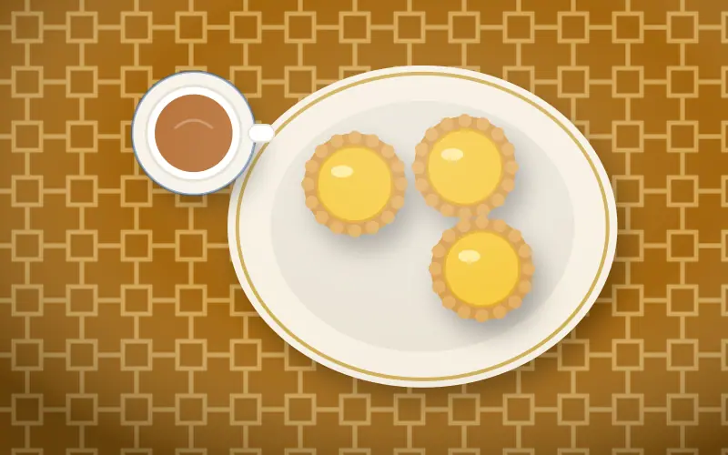

Cheap eats in Kwun Tong 觀塘區
7 places, from $28. Tap one for prices, hours and the nearest MTR.
 Lei Yue Mun Seafood Village鯉魚門海鮮村 · Lei Yue Mun~$160
Lei Yue Mun Seafood Village鯉魚門海鮮村 · Lei Yue Mun~$160 Tam Jai Yunnan Mixian (Kwun Tong)譚仔雲南米線（觀塘） · Kwun Tong$56
Tam Jai Yunnan Mixian (Kwun Tong)譚仔雲南米線（觀塘） · Kwun Tong$56  Bafang Dumpling (Kwun Tong)八方雲集（觀塘） · Kwun Tong$42
Bafang Dumpling (Kwun Tong)八方雲集（觀塘） · Kwun Tong$42  Tsui Wah (Kwun Tong)翠華（觀塘） · Kwun Tong$58
Tsui Wah (Kwun Tong)翠華（觀塘） · Kwun Tong$58 
Saint Honoré (Ngau Tau Kok)聖安娜餅屋（牛頭角） · Ngau Tau Kok~$28 Café de Coral (Kwun Tong)大家樂（觀塘） · Kwun Tong$52
Café de Coral (Kwun Tong)大家樂（觀塘） · Kwun Tong$52  Sukiya (Kowloon Bay)すき家（九龍灣） · Kowloon Bay$52
Sukiya (Kowloon Bay)すき家（九龍灣） · Kowloon Bay$52